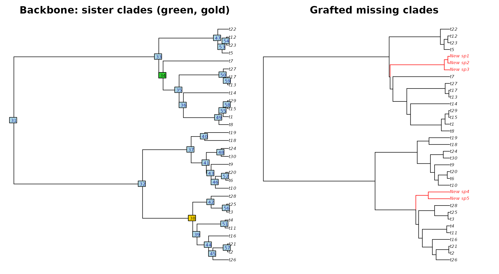
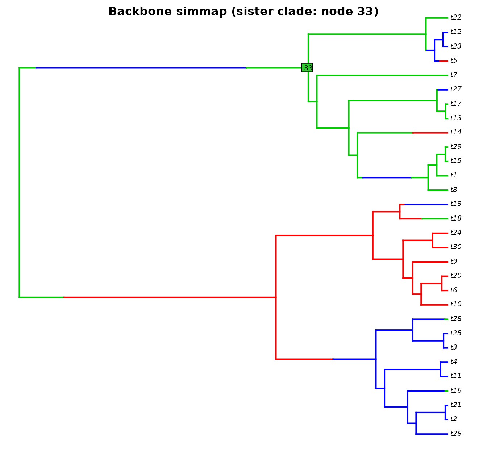
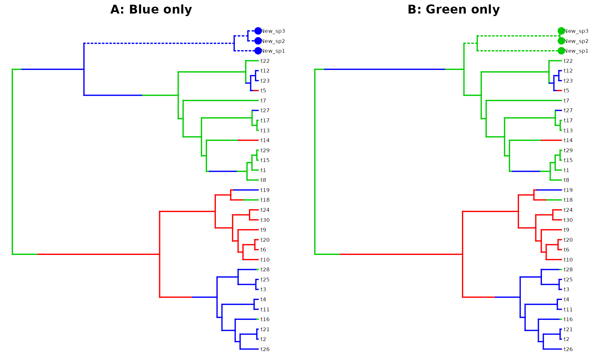

Explore options to graft missing clades
Maël Doré
2026-11-27
Source:vignettes/graft_missing_clades.Rmd
graft_missing_clades.Rmdgraft_missing_clades() grafts groups of missing
taxa that form a clade (missing clades) as the
sister of a clade of the backbone phylogeny. Where
graft_missing_taxa() places each taxon within a target
clade (see vignette("graft_missing_taxa")),
graft_missing_clades() grafts the whole
group at once, with a subtree generated under a diversification
model. The vignette("main_workflow") shows the complete
workflow with its default settings. This tutorial instead explores
the arguments of the function and explains how
they work and how they affect the output:
- What is a missing clade: sister clades, stem branches and grouping of the taxa.
-
How the missing clade is generated: the birth-death
models,
min_tips, and unsampled species. -
Species attributes: stochastic maps
(
simmap) and allowed states.
Each section changes one group of arguments and compares the grafted phylogenies side by side, with the same seed, so that the differences come from the arguments. Grafting is stochastic: the grafted phylogenies you obtain with other seeds will differ in the details, but the effects of the constraints remain.
Arguments not covered here
Some arguments are explained in dedicated tutorials:
-
seed,nb_simulations,force_simulations, and the use of several stochastic maps, to handle uncertainty and ensure the reproducibility of the runs with the seed system: seevignette("handle_uncertainty"); -
parallelcomputation to speed up the process: seevignette("parallel_grafting"); -
save_temp,resumeand the other arguments used to save temporary files and resume interrupted runs: seevignette("resume_run"); -
treat_states_as_ranges, and the stochastic maps of several traits used together: seevignette("biogeographic_data")andvignette("multiple_traits").
0/ Setup
We use the toy backbone, and helper functions that build a list of missing clades to graft, and plot the results.
data(toy_backbone)
# Plot the backbone with its node IDs, to identify the clades used below
ape::plot.phylo(toy_backbone, cex = 0.6, no.margin = TRUE)
ape::nodelabels(cex = 0.6, frame = "rect", bg = "lightblue", col = "darkblue")
# Helper 1: build a missing_taxa_list with n taxa to graft as one missing clade, sister to a clade defined by tips
make_clade_list <- function(n, sister_tips, prefix = "New_sp", start = 1, sister_name = NULL)
{
taxa <- paste0(prefix, seq(start, length.out = n))
out <- list(Taxon_name = taxa,
Sister_clade = setNames(rep(list(sister_tips), n), taxa))
if (!is.null(sister_name)) out$Sister_clade_name <- setNames(rep(sister_name, n), taxa)
return(out)
}
# Helper 2: combine the lists of several missing clades
combine_lists <- function(...)
{
lists <- list(...)
list(Taxon_name = unlist(lapply(lists, `[[`, "Taxon_name")),
Sister_clade = do.call(c, lapply(lists, `[[`, "Sister_clade")))
}
# Helper 3: plot two grafted phylogenies side by side
plot_two <- function(phy_1, title_1, phy_2, title_2)
{
par(mfrow = c(1, 2), mar = c(0.5, 0.5, 2, 0.5))
plot_grafted(phy_1, use_simmap = FALSE, cex = 0.55, main = title_1)
plot_grafted(phy_2, use_simmap = FALSE, cex = 0.55, main = title_2)
par(mfrow = c(1, 1), mar = c(5.1, 4.1, 4.1, 2.1))
}
# Helper 4: summarize the grafting of the missing clades in a table
summarize_clades <- function(phy_grafted, missing_taxa_list)
{
info <- extract_grafting_info(phy_grafted, missing_taxa_list, phy_backbone = toy_backbone)
data.frame(Missing_clade = info$Missing_clade, Taxa = info$Taxa, n_taxa = info$n_taxa,
sister_tips = info$parent_tips,
graft_age = round(info$graft_age, 2), crown_age = round(info$crown_age, 2))
}1/ What is a missing clade?
In missing_taxa_list, each taxon has a sister
clade: a clade of the backbone, defined by a pair of
tips (the clade of their most recent common ancestor), or by a
single tip (the terminal branch of this tip).
Taxa with the same sister clade are grafted together, as one
missing clade.
The missing clade is always grafted on the stem branch of its
sister clade: it becomes the sister of this
clade, and is never nested within it. This is why, unlike for missing
taxa, there is no target clade, no excluded subclade and no
include_target_clade_stem argument: the only constraint is
the sister clade. The sister clade cannot be the whole tree, as it would
have no stem branch. Clades must be defined by tips,
not by node IDs (see vignette("format_inputs") and
convert_nodes_to_tips()).
Here, we graft two missing clades: three taxa as
sister of Subfam_B1 (node 34, defined by the
tips t8 and t7), and two taxa as sister of
Subfam_A2 (node 38, defined by the tips
t28 and t26).
# ------ Missing clades: taxa grouped by their sister clade ------ #
# Missing clade 1: three taxa, sister to Subfam_B1 (node 34)
clade_1 <- make_clade_list(n = 3, sister_tips = c("t8", "t7"))
# Missing clade 2: two taxa, sister to Subfam_A2 (node 38)
clade_2 <- make_clade_list(n = 2, sister_tips = c("t28", "t26"), start = 4)
# Missing taxa list with both missing clades
taxa_two_clades <- combine_lists(clade_1, clade_2)
# Graft the missing clades
grafted_two_clades <- graft_missing_clades(phy = toy_backbone, missing_taxa_list = taxa_two_clades,
seed = 2, verbose = FALSE)
# Summarize grafting info on the missing clades
summarize_clades(grafted_two_clades, taxa_two_clades)
#> Missing_clade Taxa n_taxa sister_tips graft_age
#> 1 1 New_sp1, New_sp2, New_sp3 3 t8, t7 16.0
#> 2 2 New_sp4, New_sp5 2 t26, t3 9.1
#> crown_age
#> 1 1.47
#> 2 5.77
# Plot the backbone vs the grafted phylogeny
par(mfrow = c(1, 2), mar = c(0.5, 0.5, 2, 0.5))
# Left: the backbone with its node IDs, and the sister clades: node 34 in limegreen, node 38 in gold
ape::plot.phylo(toy_backbone, cex = 0.55, main = "Backbone: sister clades (green, gold)")
ape::nodelabels(cex = 0.55, frame = "rect", bg = "lightblue", col = "darkblue")
ape::nodelabels(node = 34, cex = 0.55, frame = "rect", bg = "limegreen", col = "black")
ape::nodelabels(node = 38, cex = 0.55, frame = "rect", bg = "gold", col = "black")
# Right: the grafted phylogeny
plot_grafted(grafted_two_clades, use_simmap = FALSE, cex = 0.55, main = "Grafted missing clades")
Each missing clade is a monophyletic group attached to the stem of its sister clade. Missing clades nested within other sister clades are processed first, so a missing clade can be grafted on a phylogeny that already includes the missing clades grafted within its sister clade. A sister clade defined by a single tip is the terminal branch of this tip, and a single missing taxon is grafted on the stem of its sister clade as a missing clade.
Taxa sharing the same sister clade must share the same
attributes: for instance, they must have the same
allowed_states (the function stops otherwise, see
Section 3).
2/ How is the missing clade generated?
Unlike missing taxa, a missing clade needs a subtree: the relationships and ages of its taxa. It is generated under a birth-death (BD) model, with three steps for each missing clade:
- A BD model is fitted on the sister clade, or on the
smallest enclosing clade with at least
min_tipstips if the sister clade is too small. - The graft age of the missing clade is drawn on the stem branch of the sister clade (between its crown age and its stem age).
- The subtree of the missing taxa is generated under the fitted model, conditioned on the number of taxa and on the graft age.
A BD model is therefore always required: there is no
method argument, and no "uniform" alternative
as in graft_missing_taxa(). The BD models can be reported
with return_BD_model_summary = TRUE, and extracted with
extract_BD_model_summary().
Fit the models on enough tips: min_tips
If the sister clade has fewer than min_tips
tips (default: 5, minimum: 3), the
model is fitted on the smallest enclosing clade with at least
min_tips tips.
Here, we graft 4 taxa as sister of Gen_1 (node
50, tips t13 and t27, with 3 tips
in the backbone) with min_tips = 3 (the sister clade has
enough tips) and min_tips = 5 (it does not). Then, we
compare the fits of the BD models used to produce the
subtrees of the missing clade, and draw the graft age:
# ------ min_tips: clade used to fit the birth-death model ------ #
taxa_gen1 <- make_clade_list(n = 4, sister_tips = c("t13", "t27"))
grafted_min3 <- graft_missing_clades(phy = toy_backbone, missing_taxa_list = taxa_gen1,
min_tips = 3, return_BD_model_summary = TRUE,
seed = 1234, verbose = FALSE)
grafted_min5 <- graft_missing_clades(phy = toy_backbone, missing_taxa_list = taxa_gen1,
min_tips = 5, return_BD_model_summary = TRUE,
seed = 1234, verbose = FALSE)
# Summary of the BD models: sister clade vs enclosing clade used to fit the diversification model
cols <- c("n_taxa", "initial_clade_n_tips", "enclosing", "fitted_clade_n_tips", "min_tips",
"b", "d", "net_diversification", "relative_extinction", "rho")
rbind(extract_BD_model_summary(grafted_min3)[, cols], extract_BD_model_summary(grafted_min5)[, cols])
#> n_taxa initial_clade_n_tips enclosing fitted_clade_n_tips min_tips b
#> 1 4 3 FALSE 3 3 1.3647565
#> 2 4 3 TRUE 8 5 0.7608622
#> d net_diversification relative_extinction rho
#> 1 1.3511089 0.013647565 0.99 1.0000000
#> 2 0.7532536 0.007608622 0.99 0.6666667With min_tips = 5, the model is fitted on a 8-tip
enclosing clade: the rates describe the dynamics of a larger part of the
tree rather than of the sister clade, and differ from the rates of the
3-tip clade. You can play with the min_tips parameter to
adjust the way BD models are fitted:
- increase
min_tipsif the rates estimated on small clades are not reliable; - decrease
min_tips(down to3) to keep the model close to the sister clade.
Unsampled species: total_richness_per_clades
The backbone and the missing clades to graft may not cover all the
species of the clades. Providing the total richness of
clades (see vignette("format_inputs")) lets the BD
models account for the unsampled species with:
total_richness = nb_backbone + nb_missing + nb_unsampled.
Therefore, BD models are fitted with sampling
fraction defined as
rho = n_present / (n_present + n_pending + n_unsampled) to
account for those unsampled species. Unsampled species are only
used to fit the models: they are not grafted.
As for missing taxa, many unsampled species lower the sampling fraction, and give higher speciation and extinction rates: the lineages of the missing clade are expected to diverge more recently, so the crown age of the missing clade is expected to be younger. The graft age is drawn on the stem of the sister clade, between its crown age and its stem age: it is constrained by the backbone, and is expected to be much less affected, yet still younger in average than without accounting for unsampled species.
Here, we graft 4 taxa as sister of Subfam_A1 (node
37, tips t19 and t10, 8 tips in
the backbone) without total richness, and with a total richness of 60
species:
# ------ Total richness: no unsampled species vs many unsampled species ------ #
# Create list of taxa to graft as a missing clade sister to Subfam_A1
taxa_subfam_a1 <- make_clade_list(n = 4, sister_tips = c("t19", "t10"), sister_name = "Subfam_A1")
# Create richness table to account for unsampled species
# Total richness of Subfam_A1: 60 species, so 60 - 8 = 52 unsampled species
richness_subfam_a1 <- list(Sister_clade = list(c("t19", "t10")), Sister_clade_name = "Subfam_A1",
total_richness = 60)
# Graft with and without accounting for unsampled species
grafted_no_richness <- graft_missing_clades(phy = toy_backbone, missing_taxa_list = taxa_subfam_a1,
return_BD_model_summary = TRUE, seed = 1234, verbose = FALSE)
grafted_richness <- graft_missing_clades(phy = toy_backbone, missing_taxa_list = taxa_subfam_a1,
total_richness_per_clades = richness_subfam_a1,
return_BD_model_summary = TRUE, seed = 1234, verbose = FALSE)
# Inspect the effective sampling fraction and the rates of the BD models
cols <- c("n_taxa", "n_unsampled", "rho", "b", "d", "net_diversification")
rbind(extract_BD_model_summary(grafted_no_richness)[, cols],
extract_BD_model_summary(grafted_richness)[, cols])
#> n_taxa n_unsampled rho b d net_diversification
#> 1 4 0 1.0000000 0.1589055 0.0000000 0.1589055
#> 2 4 52 0.1333333 0.8782356 0.6317844 0.2464512
## The sampling fraction (rho) is lower with many unsampled species
## As a result, the speciation (b) and extinction (d) rates are higherWe then compare graft ages and crown ages across 100 simulations with each setting:
# Graft 100 times with and without accounting for unsampled species
sims_no_richness <- graft_missing_clades(phy = toy_backbone, missing_taxa_list = taxa_subfam_a1,
nb_simulations = 100, seed = 1234, verbose = FALSE)
sims_richness <- graft_missing_clades(phy = toy_backbone, missing_taxa_list = taxa_subfam_a1,
total_richness_per_clades = richness_subfam_a1,
nb_simulations = 100, seed = 1234, verbose = FALSE)
# Extract the graft ages and crown ages of the missing clade from the simulations
info_no_richness <- extract_grafting_info(sims_no_richness, taxa_subfam_a1, phy_backbone = toy_backbone)
info_richness <- extract_grafting_info(sims_richness, taxa_subfam_a1, phy_backbone = toy_backbone)
# Summarize the ages across the simulations
ages_summary <- function(info) c(mean_graft_age = mean(info$graft_age),
median_graft_age = median(info$graft_age),
mean_crown_age = mean(info$crown_age),
median_crown_age = median(info$crown_age))
round(rbind("No total richness" = ages_summary(info_no_richness),
"Total richness = 60" = ages_summary(info_richness)), 2)
#> mean_graft_age median_graft_age mean_crown_age
#> No total richness 13.39 13.09 7.80
#> Total richness = 60 12.48 11.91 3.78
#> median_crown_age
#> No total richness 7.60
#> Total richness = 60 3.26
## As expected, the crown age of the missing clade is much younger with many unsampled species,
## while the graft age is only slightly younger.3/ Species attributes: simmap and allowed states
Grafting can be constrained by a species attribute:
a stochastic map (simmap) gives the state of the attribute
along the branches of the backbone. Each missing clade is grafted on the
portions of the stem branch of its sister clade that are in its
allowed states.
The whole missing clade is then in the state of the point where it was grafted: a missing clade inherits a single state.
Allowed states are set for each missing clade with
the allowed_states of the list (all the taxa of a
missing clade must have the same value), or for all
missing clades with the allowed_states argument
(the list value takes precedence). The stochastic maps are built from
tip data (see vignette("prepare_stochastic_maps")). Here we
use the toy map of a single categorical trait, with
three states ("blue", "green",
"red").
This section presents the general principle with a simple example. For more details, please refer to the tutorials dedicated to the different types of species attributes:
- for biogeographic ranges (multi-area states,
treat_states_as_ranges):vignette("biogeographic_data"); - for combining several traits (or a trait and
ranges) as constraints:
vignette("multiple_traits"); - for continuous traits:
vignette("continuous_data").
Here, we graft 3 taxa as a missing clade, sister of
Family_B (node 33, tips t8 and
t22). The stem branch of Family_B has
two states: green (at both ends) and blue (most of the
branch), as shown on the backbone simmap:
# ------ The backbone simmap ------ #
data(toy_simmap)
state_colors <- c(blue = "blue", green = "green3", red = "red")
# Plot the simmap, with the sister clade (node 33) in limegreen
par(mar = c(0.5, 0.5, 2.5, 0.5))
phytools::plotSimmap(toy_simmap, colors = state_colors, fsize = 0.6, ftype = "i", lwd = 2)
title("Backbone simmap (sister clade: node 33)", line = -1, cex.main = 1)
ape::nodelabels(node = 33, cex = 0.6, frame = "rect", bg = "limegreen", col = "black")
We compare the grafting with blue only and green only as allowed states:
# ------ Allowed states: blue only vs green only ------ #
# Missing clade sister to Family_B
taxa_fam_b <- make_clade_list(n = 3, sister_tips = c("t8", "t22"))
# Graft the missing clade with only blue as 'allowed_states'
grafted_blue <- graft_missing_clades(phy = toy_backbone, missing_taxa_list = taxa_fam_b,
simmap = toy_simmap, allowed_states = "blue",
seed = 48, verbose = FALSE)
# Graft the same missing clade, with only green as 'allowed_states'
grafted_green <- graft_missing_clades(phy = toy_backbone, missing_taxa_list = taxa_fam_b,
simmap = toy_simmap, allowed_states = "green",
seed = 48, verbose = FALSE)
# The simmap is updated: the whole missing clade has the state of the point where it was grafted
sapply(list("Blue only" = grafted_blue, "Green only" = grafted_green),
function(phy_grafted) unique(phytools::getStates(phy_grafted$simmap, type = "tips")[taxa_fam_b$Taxon_name]))
#> Blue only Green only
#> "blue" "green"
# Helper: plot the updated simmap of a grafted phylogeny
# Grafted branches are dashed, and grafted tips are marked with a point in the color of their final state
plot_states <- function(phy_grafted, main)
{
plot_grafted(phy_grafted, which = "edges", simmap_colors = state_colors, fsize = 0.55, main = main)
grafted_tips <- which(phy_grafted$grafted_tips)
tip_states <- phytools::getStates(phy_grafted$simmap, type = "tips")[phy_grafted$tip.label[grafted_tips]]
ape::tiplabels(tip = grafted_tips, pch = 19, cex = 1.5, col = state_colors[tip_states])
}
# Plot both updated simmaps
par(mfrow = c(1, 2), mar = c(0.5, 0.5, 2, 0.5))
plot_states(grafted_blue, main = "A: Blue only")
plot_states(grafted_green, main = "B: Green only")
In panel A (resp. B), the missing clade is grafted on the
blue (resp. green) portion of the stem of
Family_B, so all its taxa have this state, and the graft
age falls in the corresponding range of ages.
Without allowed_states, it can be grafted on any portion
of the stem and takes the state of the point where it was grafted.
Several states can be allowed (e.g.,
c("blue", "green")), and the states must match the
names of the states of the map exactly. With
return_simmap = FALSE, the updated map is not added to the
output ($simmap).
As for missing taxa, min_valid_fraction warns about the
missing clades with a narrow window of ages in the allowed
states, and max_age_redraws limits the redraws of
the graft age when it falls where no stem portion is in the allowed
states (see vignette("graft_missing_taxa") and
vignette("check_grafting")).
Next steps
Now that you know all the tweaks of grafting missing clades, you may be interested in exploring options for:
- grafting missing taxa within target clades:
graft_missing_taxa(), seevignette("graft_missing_taxa"); - grafting both types in one run:
graft_missing_taxa_and_clades(), seevignette("combine_missing_taxa_and_clades"); -
checking the grafting plan and the resulting
grafted phylogenies: see
vignette("check_grafting"); - handling uncertainty with several simulations and
stochastic maps, and ensuring the reproducibility of
the runs with the seed system:
vignette("handle_uncertainty"); - speeding up your runs by using parallel
computation:
vignette("parallel_grafting"); -
resuming interrupted runs:
vignette("resume_run").